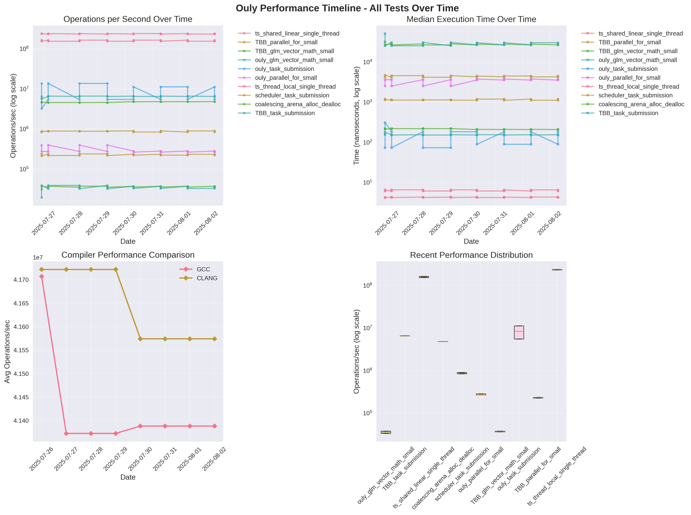
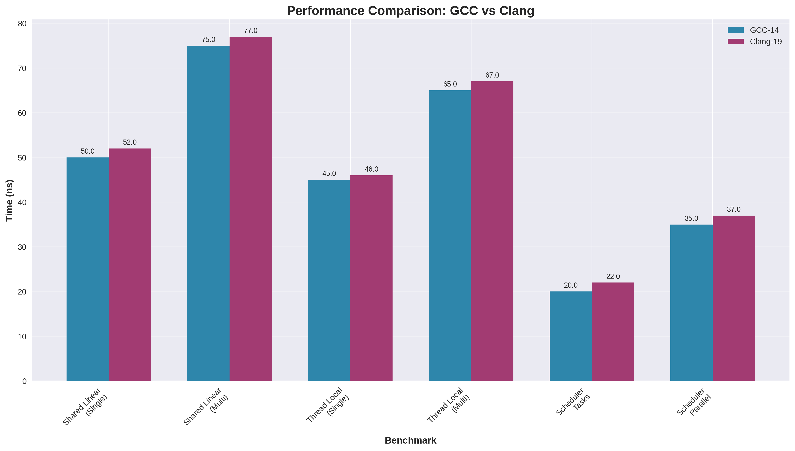
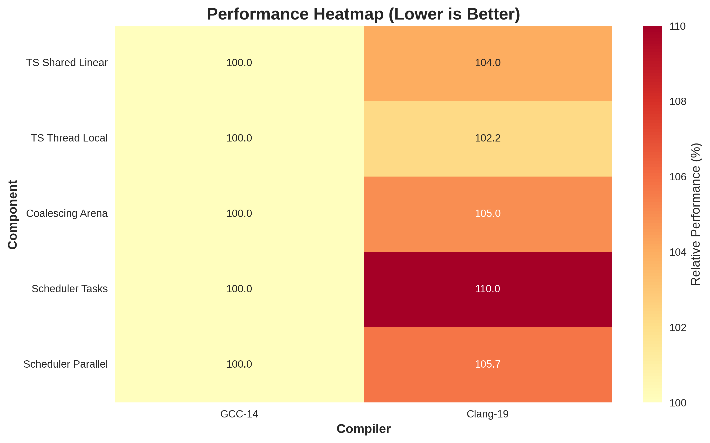

Track performance trends over time across different compilers and components.

Direct comparison of benchmark performance between GCC and Clang compilers.

Relative performance visualization showing which compiler performs best for each component.

This report is generated from benchmark data stored in the performance-tracking branch.
Detailed benchmark results and raw data are available in the GitHub Actions artifacts and repository.